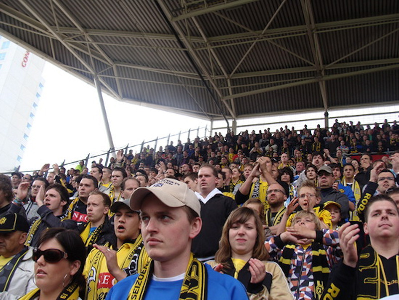

|
FC Utrecht -
Roda JC (4-1) 16 mei 2010 |

Het Roda-legioen was 16 bussen sterk.
foto: rodaworld
Net als drie dagen eerder in Kerkrade kenden de
Domstedelingen een vliegende start. Al na twee minuten leidde FC Utrecht met
1-0, door een treffer van Ricky van Wolfswinkel. De spits schoot via de
binnenkant van de paal een voorzet van Jacob Mulenga tegen de touwen. Maar
ondanks de vroege tegenvaller, liet Roda JC zich niet uit het veld slaan in
Stadion Galgenwaard.
In de 21ste minuut kwam de ploeg uit Limburg op gelijke hoogte door een kopbal
van Mads Junker. De spits kopte over de uitkomende FC Utrecht-doelman Michel
Vorm heen en zette Roda JC weer op gelijke hoogte. De bezoekers bleven in het
restant van de eerste helft de bovenliggende partij en appelleerde nog
tevergeefs om een strafschop na een overtreding van Alje Schut op Junker.
Na rust kwam de thuisclub goed weg toen de van FC Utrecht gehuurde Morten Skoubo
een goede kans op de 1-2 miste, maar in de 47ste minuut was Van Wolfswinkel met
een kopbal aan de andere kant wél trefzeker. Toen Roda JC-aanvoerder Davy De
Fauw twee minuten daarna ook nog eens een directe rode kaart ontving na een
charge op Dries Mertens, was de wedstrijd gelopen.
De club uit de Domstad liep met elf tegen tien nog uit naar een 4-1 overwinning
door twee treffers van Mulenga. Nog binnen het uur kopte de Zambiaan bij de
tweede paal een voorzet van Mertens binnen en in de 71ste minuut was de
Belgische spelmaker opnieuw de aangever en lobde Mulenga de bal over de
weifelend uitkomende Roda JC-doelman Przemyslaw Tyton heen.
foto: bunnikside
|
|
|